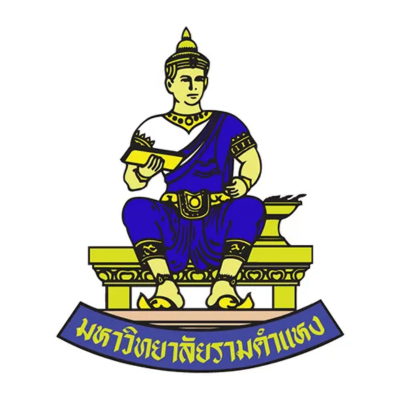
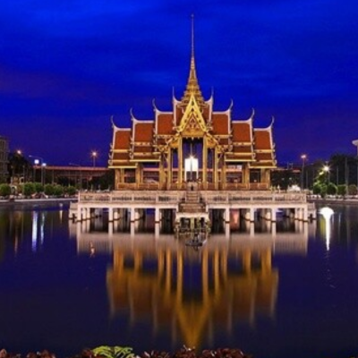
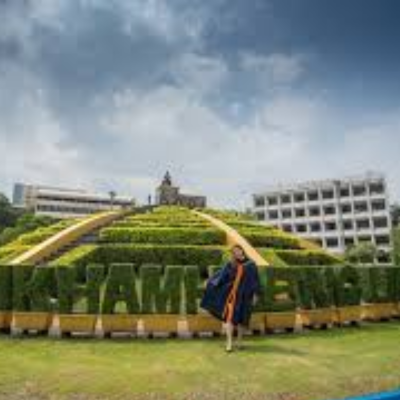

Ramkhamhaeng University



Ramkhamhaeng University, established in 1971 in Bangkok, is one of Thailand’s largest public universities and a pioneer in open and distance education. The university provides flexible learning opportunities for a diverse student body, offering programs in arts, sciences, business, education, law, and social sciences. Known for its emphasis on accessibility, lifelong learning, and community engagement, Ramkhamhaeng University has played a key role in expanding higher education in Thailand, empowering students from all backgrounds to gain knowledge, develop skills, and contribute to society.